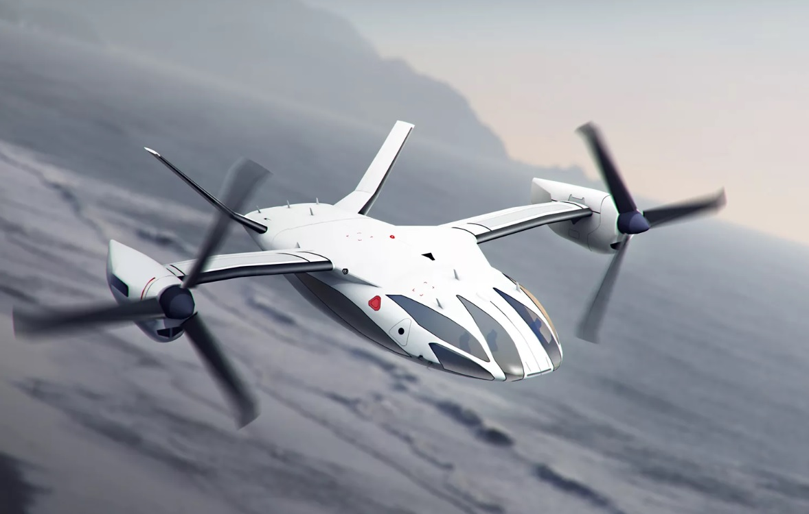

В 2020 году Airbus, Rolls-Royce и Siemens проведут первые летные испытания гибридного самолета на основе пассажирского воздушного судна BAE 146. Guardian узнал у технического директор Rolls-Royce подробности разработки, а также выяснил, какие виды воздушных судов в первую очередь перейдут на электротягу.
Через 3 года Airbus, Rolls-Royce и Siemens проведут первые летные тесты гибридного самолета E-Fan X. В основе конструкции ляжет пассажирский самолет BAE 146. Инженеры заменят один из четырех турбовентиляторных газовых двигателей BAE 146 на гибридный двигатель. Его работу обеспечат аккумуляторы и бортовой генератор на авиационном топливе.
После первых испытаний будет заменен еще один газотурбинный двигатель, а также активированы аккумуляторы для взлета и набора высоты. Проектировкой газотурбинного двигателя, генератора и электронных компонентов займется Rolls-Royce.
По словам технического директора Rolls-Royce Пола Штайна, компании решили создавать гибридный мотор, потому что технологии пока не позволяют построить полностью электрический пассажирский самолет. Но по мере развития технологий ситуация будет меняться, уверен Штайн.
Техдиректор Rolls-Royce назвал три категории самолетов, которые первыми перейдет на электротягу. К первой категории относятся авиатакси — небольшие летательные аппараты, рассчитанные на 1-4 пассажиров, с запасом хода не более 120 км. «Для таких судов аккумуляторы уже практически готовы», — сказал Штайн. Вероятно, именно этим объясняется возросшая популярность летающих автомобилей, а именно так сейчас принято называть небольшие воздушные такси. Guardian приводит в качестве примеров принадлежащий китайской Geely стартап Terrafugia, а также словенскую компанию Pipistrel. Свою версию авиатакси разрабатывает и Airbus. В 2015 году спроектированный компанией двухместный минисамолет E Fan пересек Ла-Манш.
Второй рынок, который выиграет от перехода на электротягу, — это региональные самолеты на 10-100 пассажиров. Как раз такой самолет компании планируют выпустить к 2030-м годам. «Наша задача — это летательный аппарат с неподвижным крылом и гибридной установкой, рассчитанный на региональные перелеты», — отметил Штайн.
И, наконец, третий рынок — это рынок коммерческих перевозок на короткие расстояния. На нем пока доминируют узкофюзеляжные Airbus A320 и Boeing 737.
Эксперт по аэронавтике Бьорн Ферм считает, что воздушные суда с маленькой протяженностью полета точно скоро перейдут на электродвигатели. Более крупные самолеты в ближайшие 30 лет могут быть только гибридными. «Для дальних полетов это пока нереально. Для этого должен произойти настоящий прорыв в разработке аккумуляторов», — говорит он.
Другие эксперты согласны с Фермом. Даже если плотность энергии аккумуляторов увеличится в 5 раз и составит 1000 ватт*часов на килограмм, этого хватит только для работы миниатюрного воздушного судна. Причем такой показатель будет достигнут не раньше 2045 года.
По материалам сайта: https://hightech.fm/2017/12/29/ubi_conservatives